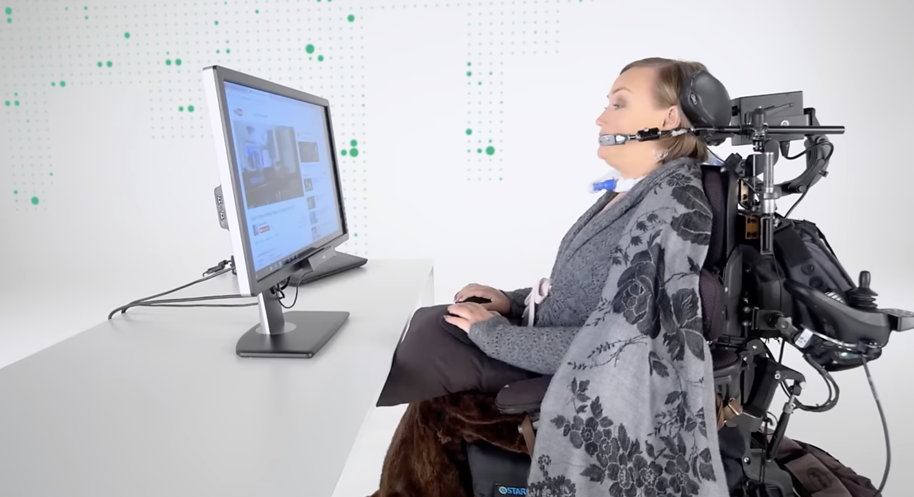

TOBII EYE TRACKER 5
El Tobii Eye Tracker 5 es un dispositivo de seguimiento ocular que permite controlar un ordenador mediante el movimiento de los ojos. Detecta en tiempo real hacia dónde mira el usuario y traduce esa información en acciones en la pantalla.
Su objetivo es hacer la interacción persona-ordenador más natural, intuitiva y accesible, eliminando la necesidad de periféricos tradicionales como el ratón o el teclado.
Beneficios en la Interacción Persona-Ordenador
Interacción sin contacto
Permite controlar el ordenador con la mirada, ideal en entornos donde la higiene o la comodidad son prioritarias.
Naturalidad
Hace que la relación con el ordenador sea más fluida, especialmente en videojuegos o entornos de realidad aumentada.
Precisión
Utiliza cámaras infrarrojas y algoritmos de IA para seguir los movimientos oculares con gran exactitud.
Aplicaciones en accesibilidad
El Tobii Eye Tracker 5 tiene un papel fundamental en la inclusión digital. Su tecnología se emplea para ayudar a personas con parálisis cerebral, ELA u otras discapacidades motoras que no pueden utilizar las manos, pero sí pueden mover los ojos.
Mediante programas de comunicación asistida, estos usuarios pueden escribir, seleccionar iconos o incluso hablar con solo dirigir la mirada hacia un punto de la pantalla. De esta forma, el seguimiento ocular se convierte en una herramienta que **devuelve la autonomía y la capacidad de comunicación** a muchas personas.
Evolución del dispositivo
La interacción con los ordenadores comenzó con periféricos básicos como el teclado (años 60) y el ratón (años 80). Con el tiempo surgieron las pantallas táctiles, los asistentes de voz y los sensores de movimiento.
Los primeros sistemas de seguimiento ocular eran grandes, costosos y poco precisos. Hoy, Tobii ha conseguido miniaturizar la tecnología y mejorar su rendimiento gracias al uso de inteligencia artificial y cámaras infrarrojas compactas.
El Tobii Eye Tracker 5 representa la última etapa de esta evolución, acercando la interacción natural entre persona y ordenador a todo tipo de usuarios.
Galería de imágenes

Más información
Visita la web oficial de Tobii para conocer más:
https://gaming.tobii.com/products/eye-tracker-5/